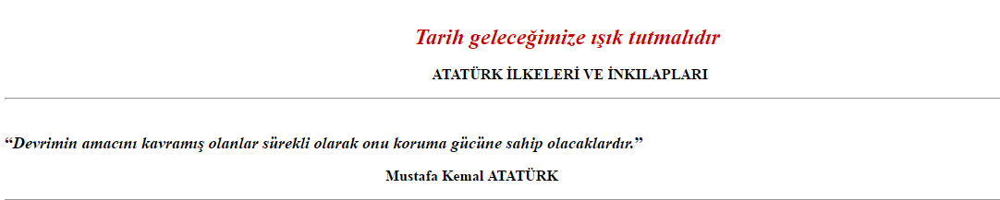

Mustafa Kemal Atatürk tarafından yapılan inkılaplar, TBMM’nin açılmasından sonra 1922’de saltanatın kaldırılması ile başlamıştır.1933’e kadar devam eden ve sonucunda teokratik ve çok uluslu Osmanlı Devleti’nin laik, demokratik ulus devlet Türkiye’ye dönüşmesiyle sonuçlanan devrimlerin tümü.
Atatürk’ün yaptığı bu devrimler toplumsal, kültürel, legal ve ekonomik bir dizi düzenlemelerdir.
Siyasi alandaki inkılaplar
- Saltanatın Kaldırılması (1 Kasım 1922)
- Ankara’nın Başkent Olması (13 Ekim 1923)
- Cumhuriyetin İlanı (29 Ekim 1923)
- Halifeliğin Kaldırılması (3 Mart 1924)
- Çok Partili Rejim Denemeleri ( Terakkiperver Cumhuriyet Fırkası, 1924, Serbest Cumhuriyet Fırkası, 1930)
- Kadınlara siyasi hakların verilmesi (1930 Belediye – 1933 Muhtarlık – 1934 Milletvekili)
Toplumsal ve Sosyal alanda yapılan inkılaplar
- Kadınların Erkeklerle Eşit Haklara Sahip Olması(1934)
- Şapka ve Kıyafet Devrimi (Şapka Kanunu), (25 Kasım 1925)
- Lâkap ve Unvanların Kaldırılması (26 Kasım 1934)
- Soyadı Kanunu (21 Haziran 1934)
- Laiklik (1928)
- Milletlerarası Takvim ve Saatin, Yeni Rakamların Kabulü ve Ölçülerde Değişiklik (26 Aralık 1925 – 26 Mart 1931)
- Tekke ve zaviyelerin kapatılması (30 Kasım 1925)
Eğitim ve kültür alanındaki inkılaplar
- Millet Mekteplerinin Açılması (1928)
- Öğretimin Birleştirilmesi (3 Mart 1924)
- Medreselerin Kapatılması (1924)
- Maarif Teşkilatı Hakkında Kanun (1926)
- Harf Devrimi (1 Kasım 1928)
- Güzel Sanatlarda Yenilikler(1928)
- Türk Tarih ve Dil Kurumlarının Kurulması (12 Nisan 1931, 12 Temmuz 1932)
- Dil Devrimi (1932)
- Üniversite Reformu (1933)
- Üniversite Öğreniminin Düzenlenmesi (31 Mayıs 1933)
Ekonomi alanındaki inkılaplar
- İzmir İktisat Kongresi (1923)
- Aşar(Öşür) Vergisinin Kaldırılması (17 Şubat 1925)
- Çiftçinin Özendirilmesi(1925)
- Örnek Çiftliklerin Kurulması (1925)
- Tarım Kredi Kooperatifleri’nin Kurulması (1925)
- Kabotaj Kanunu (1 Temmuz 1926)
- Sanayi Teşvik Kanunu (28 Mayıs 1927)
- Toprak Reformu (1929)
- I. ve II. Kalkınma Planları (1933, 1937)
- Yüksek Ziraat Enstitüsü’nün Kurulması (1933)
- Ticaret ve Sanayi Odalarının Kurulması (1935)
Hukuk alanındaki inkılaplar
- Mecellenin Kaldırılması (1924 – 1937)
- Türk Medeni Kanunu (1924 – 1937)
- Türk Ceza Kanunu (1926).
- Yeni Anayasanın Kabulü (1924)
- Teşkilat-ı esasiye Kanunu (1921)
- Şer’iyye Mahkemelerinin Kapatılması (1924)